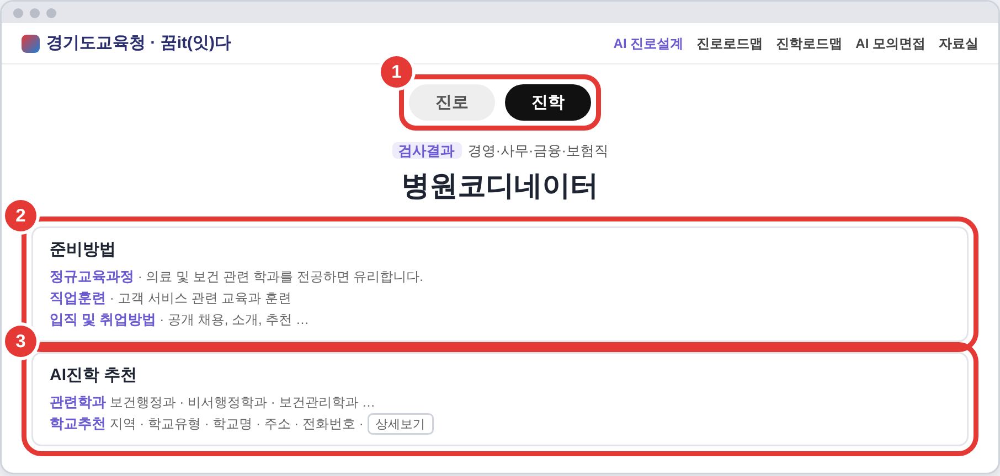
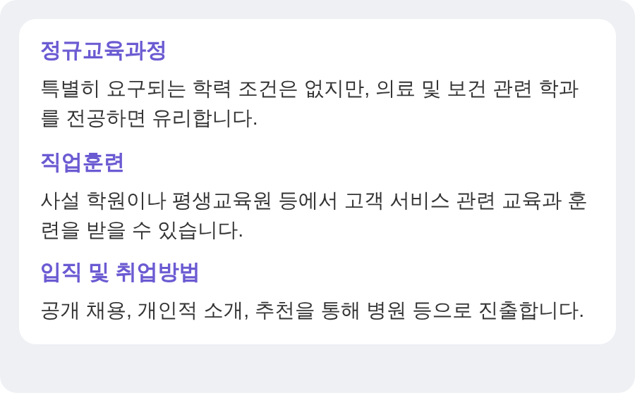
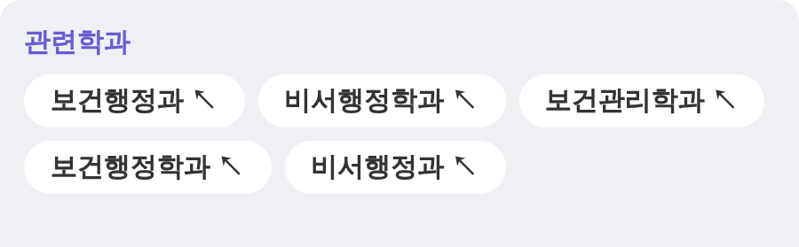
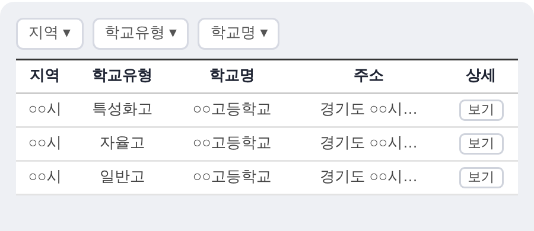

STEP 02 · 진로설계
[진학] 탭에서 준비방법·관련학과·추천 학교를 살펴봐요
진로설계 화면 바로가기
매탄중학교 진로상담실
1
2-2 진학탐색 · 1 / 4

2
2-2 진학탐색 · 2 / 4

내가 준비할 것 :
3
2-2 진학탐색 · 3 / 4

관심 학과 :
4
2-2 진학탐색 · 4 / 4

관심 학교 :
더 알아보기
관심 학교는 홈페이지·입학설명회로
상의
고르기 전에 가족·선생님과 상의해요
다음
2-3 직업정보로 더 깊이!
고른 학과와 학교는 진학로드맵에 넣어 계획을 세워 봐요.
2-2 진로 진학탐색 한 장용